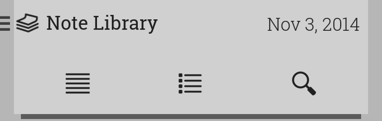
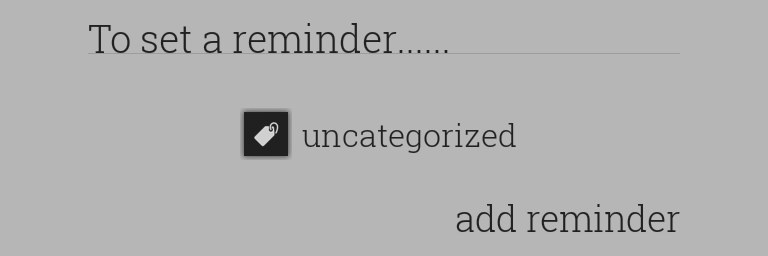
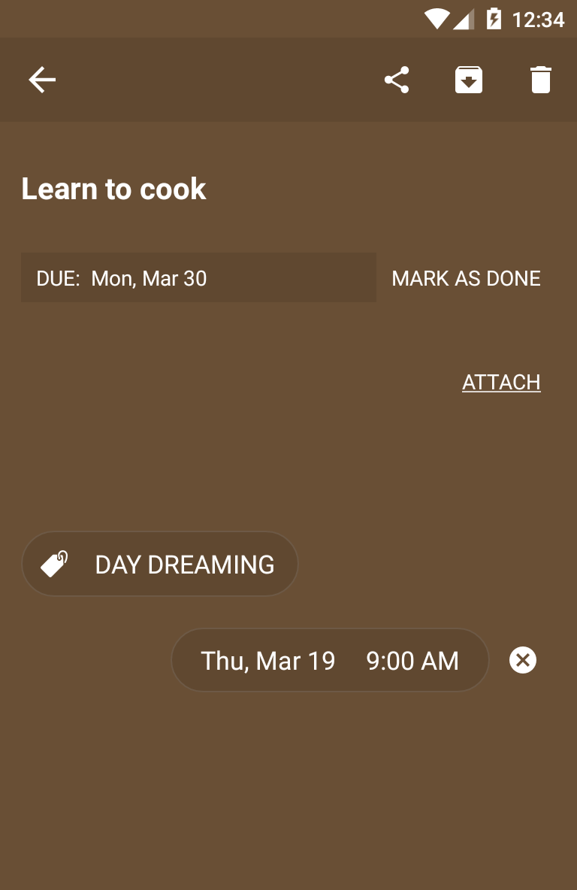
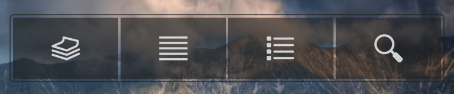
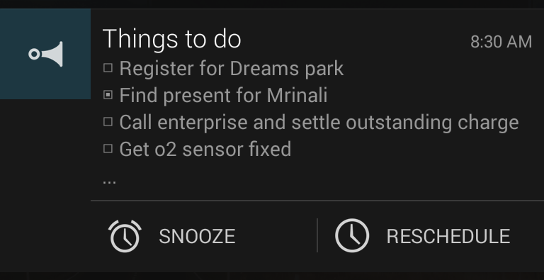

Help Topics
Basic Usage
Navigation
Common Note Tasks
List-Specific Usage
Gestures
Tags
Reminders
Homescreen Widgets
Quick Editor
Notifications
Basic Usage

Stilus opens in the Note Library. This is where all active notes (those that are not Archived or Deleted) reside. To create a new note, click . For creation of a list, click . Both these actions will take you to the Editor.
{kind=link}
{kind=link}
{kind=link}
Common Note Tasks
Editor
Sharing of a note with other apps can be initiated by clicking the share button when inside the Editor.
If at any time while editing a note, you wish to discard changes made during that session, click discard.
Clicking switch button at top-right lets you toggle between regular note and list. A regular note is converted to a list by using the line-breaks as the separation parameter between items.
Library, Archive, Recycle Bin
Long-pressing a note triggers the multiple-selection mode and launches the contexual action-bar. Options available for selected notes differ between the Library, Archive and Recycle Bin. options also differ based on the number of notes selected.
List-Specific Usage
When working with lists, use Next and Prev keyboard buttons to navigate between the list items. Pressing Enter or Return adds a new item at the following position. If the text-cursor is in the middle when Enter is pressed, the new item is initialized with the text following the cursor. Pressing Enter on an empty item hides the keyboard. Pressing Next on the last item does the same.
Gestures
Left-to-Right and Right-to-Left swipe gestures perform different actions based on the current activity.
Activity |
Left-to-Right |
Right-to-Left |
|---|---|---|
Library |
Delete |
Archive |
Archive |
Delete |
Unarchive |
Recycle Bin |
Delete Permanently |
Undelete |
Reminders |
Remove Reminder |
Remove Reminder |
Notes under Tag |
Remove Tag from Note |
Remove Tag from Note |
Tags
Stilus provides a basic tagging system to organize your notes. While in the Editor, click the tag icon or text (in this case 'uncategorized'). This will display the tag selection dialog:
{kind=link}
To search or filter, start typing the tag name - the filtered tags will be refreshed automatically. After the intended tag has been found, click to attach it to the note:

For creation/revision of tags, head over to Tags activity using the Navigation Drawer. To create a new Tag, click on Add button in the action-bar.
Note: Tag names have to unique (case-insensitive). This property is checked during creating/revision of a tag.
Clicking on a tag takes you to the Notes Under Tag activity which displays the notes using this tag. This is also where you can edit the tag's name or color. Clicking on a particular note allows you to assign a different tag using the tag-selection dialog. Swiping a note (Left-to-Right or Right-to-Left) removes the tag from that note. Through long-press (multiple selection mode), you can remove the tag from multiple notes. You can also assign a different tag to selected notes.
Reminders

To add a reminder on a note, open it in the Editor. Near the bottom, you'll find add reminder. Clicking it will display the calendar:
{kind=link}
{kind=link}
Note that the calendar view displays a button with time 5:00 PM in its bottom-right corner. If you click Done at this point, the reminder will be set for Nov 3, 5:00 PM. Alternatively, you can click on 5:00 PM to go to the clock view, and select another candidate. The selected date is diaplayed on the bottom-left of clock view.

Once the reminder is set, clicking on the date launches the calendar for revision. To revise the time, click on the time to open clock view. To cancel this reminder, click .
Homescreen Widgets
To create, edit & access notes quickly, use homescreen widgets. Currently, Stilus provides two types of widgets:

The Quick Access widget allows you to launch the app, create a new note or list, and start the search activity.
{kind=link}
{kind=link}
Note Display widget gives you quick access to a note of your choice, along with all functions that can be performed on a note. The widget is scrollable, and lets you to view the entire note.
Clicking launches the Quick Editor. From here, you can edit and share the note. You can also go to the Editor by clicking (inside Quick Editor or on the widget itself). The middle button lets you choose a different note to display on this widget.
When a list is being displayed in the widget, the items can be checked on or off by clicking on them. There's no need to open the Editor or Quick Editor to do so.
Quick Editor
{kind=link}
The Quick Editor has minimal design interface and provides a subset of functionality that Editor affords. It opens on the homescreen itself and does not show up in your recent apps section. The note is automatically saved and updated in the widget when you leave the Quick Editor - by clicking back or clicking outside the Quick Editor window.
Notifications

Notifications are used for the sole purpose of reminding you of a task. Clicking on the notification takes you to the Editor. Shown above is the default (collapsed) version of a notification. To show the expanded view, swipe down on the notification using two fingers:

The SNOOZE button lets you postpone the reminder by a fixed time interval - 30m, 1hr, 2hrs, 4 hrs, 24hrs - from then:
{kind=link}
You can of course choose a specific date & time by clicking PICK A DATE & TIME. This will show the calendar & time view:
{kind=link}
To access the calendar and time view directly (not through SNOOZE button), click RESCHEDULE button in the expanded notification.
Note that clicking SNOOZE or RESCHEDULE does not dismiss the notification. If you do postpone the reminder by one of the pre-defined snooze intervals, the notification will be removed and shown at the set time. Same happens when a new date & time is picked in calendar & time view using the RESCHEDULE button.